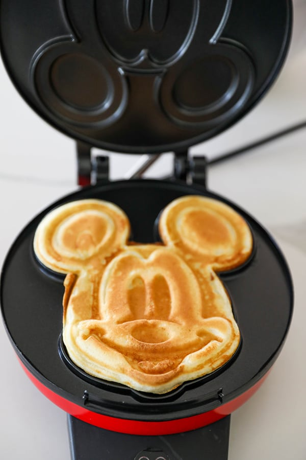

Mickey Waffles

A classic park breakfast treat
Makes about 8 Mickey waffles. Serves 4
Ingredients
- 1 3/4 cup all-purpose flour
- 2 tablespoons sugar
- 1 small onion, diced
- 1 medium green pepper, diced
- 1 teaspoon baking powder
- 1/2 teaspoon baking soda
- 1/2 teaspoon kosher salt
- 2 eggs
- 2 cups buttermilk
- 1/2 cup vegetable oil
- 1 teaspoon pure vanilla extract
Instructions
- In a medium sized mixing bowl, combine flour, sugar, baking powder, baking soda and salt. Whisk to combine
- In a separate bowl, combine eggs, buttermilk, vegetable oil and vanilla extract.
- Add wet ingredients to dry ingredients and stir just until combined
- Measure 1/2 cup of batter onto Mickey Mouse waffle maker. Cook for about 3 minutes, or until golden brown
Return to main page